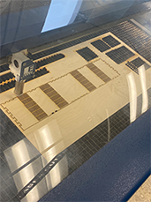
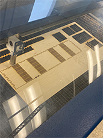
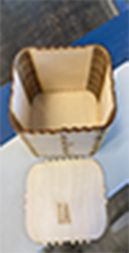
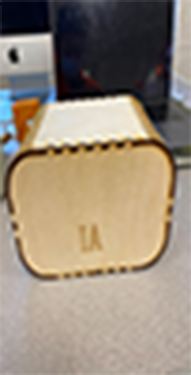
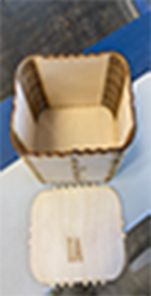
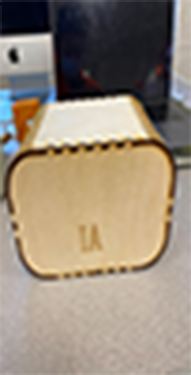
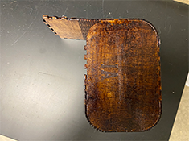
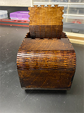

Weekly Assignments
Project 02: Laser Cutter


In this step, this is where I first of all started my project. I was able to access the video on youtube which helped me start off with my laser cut


I had to make sure that I included/downloaded all of the photos that I took to be added to my GitHub Folder and I found five different materials to laser cut


While listening to the adobe illustrator video, I was able to create the shape that I want. Now all I needed to do was find five different materials and put the correct vector and raster settings according to the type of material.
I chose to laser cut my cardboard and maple wood pieces first. Which turned out alright, however, for the cardboard, I had to do the entire process twice since the laser did not cut through the first time. Using the calibration tool was quite easier for me than I thought it would be. I had no problems using it.

I ended up using cardboard, 1/8 plywood, 1/4 plywood, 1/8 acryllic, and 1/4 maple wood as my five objects. For the plywood 1/4 and the 1/8 acryllic I was able to use the guide that showss the appropiate vector and raster settings I should use.

These are the materials that I decided to use for my five cuts.
 

 



I was able to use the final preview method in the Epilog App to see what parts of image would be negravedadn what parts will be cut. This is how my rounded living hinge box looked after all three pieces were connected. Fortunately, I didn't run into any problems in terms of the size of each part.
 As my final product, after gluing majority of the sides together. I used an Oakwood Stain to paint my box. After letting it sit overnight to dry, I then painted one clear coat over it and came back the next day to repeat this same clear coat of wood polish again. As you can see, some parts of the box weren't the same in color and that is due to the amount wood stain that I used in that area. Next time, I will first paint the living hinge box layout before gluing it since it took more time than normal to paint every inch of the box, including the inside.
Contact Me
If you have any questions, please fill out the form and fill me in with the details. :) It is always nice to meet new people!
Powered by w3.css